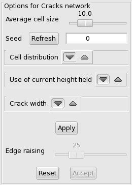

produces
hexagons, more or less regular. If you want rectangular cells, you can
use instead the "fault pen" , setting the difference in
altitude to 0
and drawing parallel / perpendicular cracks. in the tool dialog, you get this
options dialog:
produces
hexagons, more or less regular. If you want rectangular cells, you can
use instead the "fault pen" , setting the difference in
altitude to 0
and drawing parallel / perpendicular cracks. in the tool dialog, you get this
options dialog:|  |
|
A height field used as a noise source locally perturbs the cracks depending on the altitude value. From left to right, the example shows what is produced with a noise level of 0, 50 and 100. |
|
When using the "guide" option, the height field values are given a greater weight than with the "noise" option. This is mainly intended to be used with a height field showing steep transitions from dark to clear areas. These transitions become "fences". A check box allows to use a second height field to add some noise to the cracks in the uniform background. This secondary height field is of the "subdivision 1" kind. The seed and the roughness can be controlled. |
|
 |
|
 |
|
| Fixed width, 1 / 2 / 4 (512x512) |
|
Variable width, from 2 to 6 (512x512) |

 .
. to raise the constrast to the max,
using the "auto"
button.
to raise the constrast to the max,
using the "auto"
button.

 Back to the
documentation index
Back to the
documentation indexContact:
Patrice St-Gelais